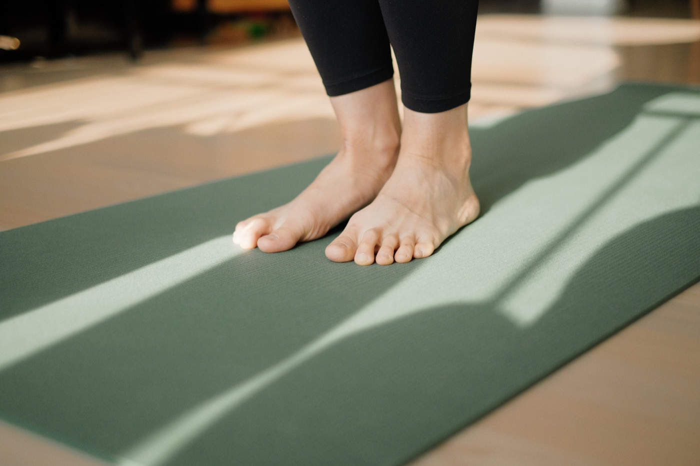

Yoga Classes
Every class is taught by a dedicated instructor, and beginners are always welcome.
Gentle Hatha Yoga
60 minutesIntended for beginners and anyone wanting a grounded foundation in yoga, this class of poses and slow movement focuses on asana (proper alignment and posture), pranayama (breath work) and guided meditation to strengthen your mind and body connection.
Vinyasa Yoga
60 minutesAlthough designed for intermediate to advanced students, beginners are welcome to try this class, which focuses on breath-synchronized movement: you inhale and exhale as you flow energetically through the poses.
Restorative Yoga
90 minutesThis class features very slow movement and long poses supported by a chair or wall. The calming, restorative experience suits students of any level, and it can be a perfect way to help rehabilitate an injury.
